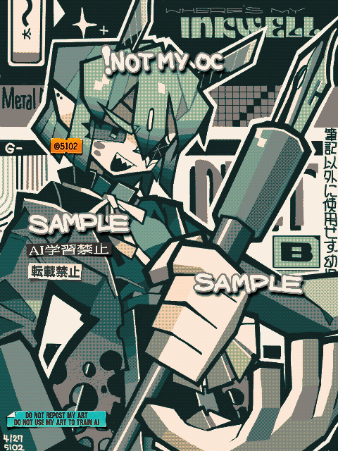

Made with
Tegaki Editor
手書きブログで描いたもの。
こちらはアートトレードの絵で、キャラクターはもきゆ宅のOCです。
このキャラは四肢がない代わりに大きな手が傍にいる、綺麗好きさん。
アナログの漫画道具をイメージしたキャラデザが秀逸だと思わんか！
おかしいな...私のデジタルお絵描き生活においてはKritaが主力な武器だったはずだが、最近は圧倒的に機能差で劣りまくる手書きブログばかり使っているー！
低機能・インストール不要・無料ペイントソフト・万歳！
いや別に有料ソフトが嫌いなわけではないが…
2024/04/27
 お借り（Art trade）
お借り（Art trade）